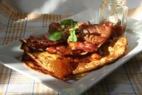
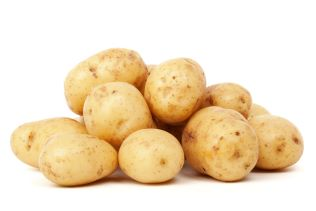

Raggmunk

Recept
Ingredienser
- Sätt ugnen på 125°C och sätt in en plåt.
- Vispa mjölet med hälften av mjölken till en slät smet i en bunke. Vispa ner resten av mjölken,
äggen och saltet.
- Skala och riv potatisen grovt. Krama ur vätskan och vänd ner den i smeten genast så att den
inte mörknar.
- Strimla och stek fläsket krispigt i en stekpanna. Lägg det på plåten i ugnen och håll det varmt.
- Hetta upp lite av matfettet i en stekpanna och klicka ner smeten och stek raggmunkarna i
omgångar. Håll dem varma på plåten i ugnen.
- Skala morötterna och skär i stavar.
- Servera fläsket med raggmunkar, morötter och lingonsylt.
